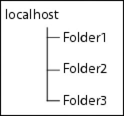

|

In
Workbench, resources are files that are not part of the applications,
or that are programmatically delivered directly into the LiveCycle
ES2.5 repository. An example of resource is content migrated from
LiveCycle ES (8.x).
Note:
To view resources that are directly associated
with an application, see the Applications view.
The Resources view is not displayed by default in the Process
Design perspective and the Form Design perspective. Select Window
> Show View > Resources to open it. The view contains a hierarchical
list of the resources in the repository. In the Resources view,
you can browse the resources or do the following actions:
-
Display a filtered list of resources.
-
View dependencies between resources.
-
View the version history.
-
Set access permissions on resources.
Filtering resources
The Resources view initially shows all content
in the repository that you have permission to view. You can further
restrict what is displayed by filtering the resources.
Filter the resources in the Resources view:

Click one
of the Resources view toolbar buttons:
-
Filter
for PDF Files
:
-
Only resources with the filename extension .pdf are displayed.
(See
Ensuring that the PDF icon is displayed
.)
-
Filter for Image Resource
:
-
Only image resources are displayed. Image resources have
the filename extension .png, .gif, .jpeg, and so on.
-
Filter for XDP Form
:
-
Only resources with the filename extension .xdp are displayed.
-
Filter Resources
:
-
All resources are displayed.
Ensuring that the PDF icon is displayed
PDF files may initially be displayed with the icons for
XDP files in the Resources view. Do this procedure to display the
Adobe Acrobat PDF icon instead.
Display the PDF icon for PDF files:
-
Select Window >
Preferences.
-
In the Preferences dialog box, select General > Editors
> File Associations.
-
In the File Types box, select *.pdf.
-
Beside the Associated Editors box, click Add.
-
In the Editor Selection dialog box, click External Programs,
select Adobe Acrobat Document, and then click OK.
-
Beside the Associated Editors box, click Default, and then
click OK.
-
In the Resources view, click the Refresh Selection button.
Viewing resource relationships
Resources
listed in the Resource view can be reused by other resources. While
this method improves the consistency and efficiency of the application
design, it also creates dependencies between these assets. Thus,
before you modify or delete a shared resource, check how this change
will affect other resources. You can examine resource relationships
in the Relationships dialog box.
The Relationships dialog box displays a table of all the resources
that are referencing the selected resource. The table contains the
following information for each resource:
-
Name:
-
The path to the resource. It includes the filename of the
resource.
-
Date:
-
The date the latest revision was created.
-
Version:
-
The current version of the resource.
-
Created By:
-
The username of the user who originally created the resource.
-
Last Modified By:
-
The username of the user who created the latest version of
the resource.
View the resource relationships:
In the Resources view,
right-click the resource and select Relationships.
Sort the list:
By default, the list is sorted by the Name column
in ascending order. You can sort the list by any other column.
-
Click the column heading to sort the list by that column.
-
(Optional) Click the column heading again to change the sorting order.
Working with file versions
The
version number of a file is updated automatically when a modified
file is saved. You can display a history of all versions of a file,
and you can promote an older version to be the current version.
When a resource is referenced, its current version is used.
The version number is displayed in brackets beside the filename.
The version number is of the form #x.y, where x is the major version
and y is the minor version. When a file is first created or added
to the repository, its version is #1.0.
The major version increments only when explicitly requested.
(See
Using older versions of files
.) The minor version increments each time
the file is changed and saved or is replaced.
Viewing the version history
You can view the history of a file, including
the version number, date of last modification, user who change it, and
comments that are associated with the version.
You can also save any version of a resource with another name
or to another location. This method allows you to review a previous
version without making it the current version.
View the version history of a file:
Right-click the
file and select History. The Versions dialog box appears.
Save a version of a resource to another location:
-
In
the Versions dialog box, select a version and click Save As.
-
In the Save As dialog box, specify a location and filename,
and then click Save.
Using older versions of files
You can promote an older version of
a file to be the current version. This procedure provides a means
to retrieve an older version of a resource that has been overwritten
by subsequent modifications. Promoting it to the current version causes
a new version to be created with the content of the specified older version.
You also have the option of incrementing the resource's major version number
to signify major changes to the resource. You may also need to do
this if, for example, the latest version of a file contains an error
and you want to revert to a previous version.
Promote an older version of a file to be the current version:
-
Right-click the file and select History.
-
Select the version of the file and click Promote to Current.
-
Type a comment to explain why the version is being promoted.
-
(Optional) Click Update Major Version. If this option is
selected, the major version (the number before the dot) is incremented
and the minor version (the number after the dot) changes to zero.
If this option is not selected, only the minor version is incremented.
-
Click OK, and then click Close.
The promoted
file is now displayed in the Resources view with its new version
number, and this version of the file is used by any service that
refers to it.
Setting access permissions
If you have sufficient permissions, you can use the Resources
view to view, add, or remove access permissions to the resources
in the repository. Typically, you have sufficient permissions for
these tasks if you are logged on as an administrator or if an administrator
assigned you the required permissions.
About access permissions
When permissions are added to a folder,
they apply to a specific user or group. The following permissions
are available:
-
Delegate:
-
Users can assign access permissions to other users of the
folder.
-
Read:
-
Users can open the resources in the folder.
-
Traverse:
-
Users can view the folder’s contents and can navigate through
the folder to lower-level folders. This permission is used when
a user needs Read or Write permissions for a lower-level folder
but not for the resources in higher-level folders.
-
Write:
-
Users can modify and save the resources in the folder.
Users
who are assigned the Super Administrator or Application Administrator
roles have full access to all resources, regardless of any access
permissions. User roles are administered using LiveCycle Administration
Console. For all other user roles, permissions must be explicitly
added to the folders.
Permissions are checked when a user
initiates an action that requires support from the repository. (See
also,
UserManagement Help.)
Viewing and changing access permissions
You can view and change the current
permissions that users or groups have for a folder.
By default, changes to folder permissions are applied to all
resources in the folder and to the resources in subfolders. However,
you can specify that the changes apply only to the resources in
the folder.
-
Right-click the folder and select Access Control.
If
you do not have sufficient permissions, the Access Control command
is dimmed.
-
Select the user or group that you want to change access permissions for.
The access permissions of the user or group for that folder are
displayed in the Permissions area.
-
Select the permissions that you want to add, and deselect
the permissions that you want to remove.
-
Specify whether to apply the changes to subfolders:
-
To apply changes to the resources in the folder as well as
the resources in all subfolders, select This Folder And All Resources
And Folders It Contains.
-
To apply changes only to the resources in the folder, select
This Folder And Only The Resources It Contains.
-
Click OK.
Adding access permissions
Add access permissions to
configure access to resources for users or groups. Permissions are added
at the folder level. All resources in a folder have the same access
permissions.
By default, folder permissions are applied to all resources in
the folder and to the resources in subfolders. However, you can
specify that the changes apply only to the resources in the folder:
For more information about how to manage access permissions that
are different for subfolders, see
Adding different permissions to different subfolders
.
Add access permissions:
-
Right-click the folder and
select Access Control.
If you do not have sufficient permissions,
the Access Control command is dimmed.
-
To specify the users and groups to provide access permissions
for, click Add. The Add Users and Groups dialog box appears.
-
Search for users and groups:
-
In the Search
Type area, select User Name or Email to specify the attribute to
search on.
-
In the box, type the text that you want to match with the
user attribute. (The search is not case sensitive.) Click Find.
-
In the Results box, select the users and groups to add and
click Add.
-
Repeat steps 3 and 4 until the Selected User(s) Or Group(s)
box contains all the users and groups that you want to configure
access permissions for, and then click OK.
-
In the Users And Groups box of the Access Control dialog
box, select one or more users and groups to configure access permissions
for.
-
In the Permissions area, select the permissions to provide
to the selected users and groups.
If you select the Read permission,
Traverse is automatically selected. If you select the Write permission,
both Read and Traverse are automatically selected.
-
Repeat steps 6 and 7 until you have configured access permissions for
all the users or groups.
-
In the Propagate Permission Changes area, select an option
to specify whether the access permissions are applied to the folder
as well as the subfolders, or only to the folder.
-
Click OK.
Adding different permissions to different subfolders
When you add access permissions to resources, you can add
them only to a folder, or to the folder and all its subfolders.
To quickly implement different access permissions for different
subfolders, use the following strategy:
-
For all users, add permissions to top-level folders that
all or most of the users require. Specify that the permissions are
propagated to all the subfolders as well.
-
Then, for subfolders, add or remove permissions for specific users.
For example, three folders, Folder1, Folder2, and Folder3, are
created under the root named localhost in the Resources view.

Permissions must be added for two user groups, GroupA and GroupB:
-
GroupA can see and access only Folder1.
-
GroupB can see and access only Folder2.
-
Neither group can see or access Folder3.
The following procedure is used to implement the access permissions:
-
Use LiveCycle Administration Console to create a user
group (ResourceUsers) that includes GroupA and GroupB.
-
Add Traverse permissions for the ResourceUsers group to the
root (localhost), and specify that the permissions propagate to
all subfolders. This step enables all users to navigate the entire
folder tree.
-
Add Read, Write, and Traverse permissions for GroupA to Folder1.
-
Add Read, Write, and Traverse permissions for GroupB to Folder2.
-
Remove all permissions of the ResourceUsers group from Folder1, Folder2,
and Folder3.

When additional users must access
a folder, they can be added to either GroupA or GroupB.
Removing access permissions
Remove access permissions
if users or groups do not need access to resources in a folder.
Remove access permissions:
-
Right-click the folder and
select Access Control.
If you do not have sufficient permissions,
the Access Control command is dimmed.
-
Select the users or groups to remove permissions from and
click Remove.
-
In the Propagate Permission Changes area, select an option
to specify whether the access permissions are removed from the folder
as well as the subfolders, or only from the folder.
-
Confirm your selection and click OK.
|
|
|